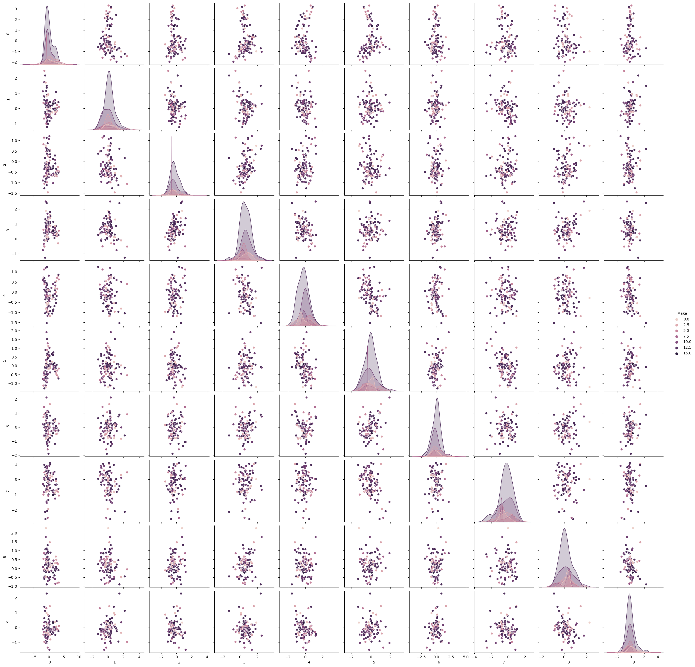

The Naive Bayes Algorithm is a vital machine learning tool for classification based on Bayes’ probability theory. It excels in training high-dimensional datasets for text classification. Common uses include sentiment analysis, news article classification, and spam filtering. It assumes all features are independent and uses various distributions like Bernoulli for binary data, Multinomial for word counts, and Gaussian for continuous values. By storing feature probabilities for each class, it calculates the likelihood of an observation belonging to a particular class.
The objective in this section includes preparing textual and record data for performing naive bayes classification. The goal is to select the optimal number of features that will increase the likelihood of the model to predict different gorupings accurately.
There are different variants of Naive Bayes such as Gaussian, Multinomial and Bernoulli Naive Bayes. These variants are tailored for different types of data: Gaussian for continuous data that follow a normal distribution, Multinomial for discrete counts like in text analysis, and Bernoulli for binary data outcomes. Selecting the right variant is crucial; for example, text classification would be best served by Multinomial, while binary outcomes would lean on Bernoulli, and continuous data on Gaussian.
Text Data
Preparing Data for Naïve Bayes:
Feature selection for text data
Import python packages
Show the code
import wikipediaimport nltkimport string from nltk.stem import WordNetLemmatizerfrom nltk.stem import PorterStemmerfrom nltk.sentiment import SentimentIntensityAnalyzerimport pandas as pdfrom sklearn.feature_extraction.text import CountVectorizerimport numpy as np
Load file, and create indexes based on string labels
Show the code
#RELOAD FILE AND PRETEND THAT IS OUR STARTING POINT df=pd.read_csv('../data-gathering/wiki-crawl-results.csv') print(df.shape)#CONVERT FROM STRING LABELS TO INTEGERS labels=[];#y1=[]; y2=[]y1=[]for label in df["label"]:if label notin labels: labels.append(label)print("index =",len(labels)-1,": label =",label)for i inrange(0,len(labels)):if(label==labels[i]): y1.append(i)y1=np.array(y1)# CONVERT DF TO LIST OF STRINGS corpus=df["text"].to_list()y2=df["sentiment"].to_numpy()print("number of text chunks = ",len(corpus))print(corpus[0:3])
(1225, 3)
index = 0 : label = electric vehicle
index = 1 : label = gasoline vehicle
index = 2 : label = hybrid vehicle
number of text chunks = 1225
['electric motive power started 1827 hungarian priest nyos jedlik built first crude viable electric motor used stator rotor commutator next year used power small car 1835 professor sibrandus stratingh university groningen netherlands built small scale electric car sometime 1832 1839 robert anderson scotland invented first crude electric carriage powered non rechargeable primary cell american blacksmith inventor thomas davenport built toy electric locomotive powered primitive electric motor 1835 1838 scotsman named robert davidson built electric locomotive attained speed four mile per hour km england patent granted 1840 use rail conductor electric current similar american patent issued lilley colten 1847', 'first mass produced appeared america early 1900s 1902 studebaker automobile company entered automotive business though also entered gasoline vehicle market 1904 however advent cheap assembly line car ford motor company popularity electric car declined significantly due lack electricity grid limitation storage battery time electric car gain much popularity however electric train gained immense popularity due economy achievable speed 20th century electric rail transport became commonplace due advance development electric locomotive time general purpose commercial use reduced specialist role platform truck forklift truck ambulance tow tractor urban delivery vehicle iconic british milk float', '20th century uk world largest user electric road vehicle electrified train used coal transport motor use valuable oxygen mine switzerland lack natural fossil resource forced rapid electrification rail network one earliest rechargeable battery nickel iron battery favored edison use electric car ev among earliest automobile preeminence light powerful internal combustion engine ice electric automobile held many vehicle land speed distance record early 1900s produced baker electric columbia electric detroit electric others one point history outsold gasoline powered vehicle']
Vectorize
Show the code
# INITIALIZE COUNT VECTORIZER# minDF = 0.01 means "ignore terms that appear in less than 1% of the documents". # minDF = 5 means "ignore terms that appear in less than 5 documents".vectorizer=CountVectorizer(min_df=0.001) # RUN COUNT VECTORIZER ON OUR COURPUS Xs = vectorizer.fit_transform(corpus) X=np.array(Xs.todense())#CONVERT TO ONE-HOT VECTORSmaxs=np.max(X,axis=0)X=np.ceil(X/maxs)# DOUBLE CHECK print(X.shape,y1.shape,y2.shape)
# INSERT CODE TO PARTITION DATASET INTO TRAINING-TESTfrom sklearn.model_selection import train_test_splittest_ratio=0.2# SPLIT ARRAYS OR MATRICES INTO RANDOM TRAIN AND TEST SUBSETS.x_train, x_test, y_train, y_test = train_test_split(X, y1, test_size=test_ratio, random_state=0)y_train=y_train.flatten()y_test=y_test.flatten()print("x_train.shape :",x_train.shape)print("y_train.shape :",y_train.shape)print("X_test.shape :",x_test.shape)print("y_test.shape :",y_test.shape)
Note this will act on object stored in pythons global scope. Therefore as long as everything is named the same you can recycle it for multiple models
Show the code
def report(y,ypred):#ACCURACY COMPUTE print("Accuracy:",accuracy_score(y, ypred)*100)print("Number of mislabeled points out of a total %d points = %d"% (y.shape[0], (y != ypred).sum()))def print_model_summary():# LABEL PREDICTIONS FOR TRAINING AND TEST SET yp_train = model.predict(x_train) yp_test = model.predict(x_test)print("ACCURACY CALCULATION\n")print("TRAINING SET:") report(y_train,yp_train)print("\nTEST SET (UNTRAINED DATA):") report(y_test,yp_test)print("\nCHECK FIRST 20 PREDICTIONS")print("TRAINING SET:")print(y_train[0:20])print(yp_train[0:20])print("ERRORS:",yp_train[0:20]-y_train[0:20])print("\nTEST SET (UNTRAINED DATA):")print(y_test[0:20])print(yp_test[0:20])print("ERRORS:",yp_test[0:20]-y_test[0:20])
Show the code
import numpy as npimport pandas as pd import matplotlib.pyplot as pltimport osimport shutil#OUTPUT FOLDER: START FRESH (DELETE OLD ONE IF EXISTS)output_dir ="output"if os.path.exists(output_dir) and os.path.isdir(output_dir): shutil.rmtree(output_dir)os.mkdir(output_dir)
reviews=[]y=[]#ITERATE OVER ROWS# for i in range(0,10): for i inrange(0,df.shape[0]):# QUICKLY CLEAN TEXT keep="abcdefghijklmnopqrstuvwxyz " replace=".,!;" tmp=""for char in df["text"][i].replace("<br />","").lower():if char in replace: tmp+=" "if char in keep: tmp+=char tmp=" ".join(tmp.split()) reviews.append(tmp)# CONVERT STRINGS TO INT TAGSif(df["sentiment"][i] >=0): y.append(1)if(df["sentiment"][i] <0): y.append(0)#PRINT FIRST COUPLE REVIEWSif(i<3):print(i)print(df["text"][i].replace("<br />",""),'\n')print(tmp)print(df["sentiment"][i],y[i])
0
electric motive power started 1827 hungarian priest nyos jedlik built first crude viable electric motor used stator rotor commutator next year used power small car 1835 professor sibrandus stratingh university groningen netherlands built small scale electric car sometime 1832 1839 robert anderson scotland invented first crude electric carriage powered non rechargeable primary cell american blacksmith inventor thomas davenport built toy electric locomotive powered primitive electric motor 1835 1838 scotsman named robert davidson built electric locomotive attained speed four mile per hour km england patent granted 1840 use rail conductor electric current similar american patent issued lilley colten 1847
electric motive power started hungarian priest nyos jedlik built first crude viable electric motor used stator rotor commutator next year used power small car professor sibrandus stratingh university groningen netherlands built small scale electric car sometime robert anderson scotland invented first crude electric carriage powered non rechargeable primary cell american blacksmith inventor thomas davenport built toy electric locomotive powered primitive electric motor scotsman named robert davidson built electric locomotive attained speed four mile per hour km england patent granted use rail conductor electric current similar american patent issued lilley colten
-0.7506 0
1
first mass produced appeared america early 1900s 1902 studebaker automobile company entered automotive business though also entered gasoline vehicle market 1904 however advent cheap assembly line car ford motor company popularity electric car declined significantly due lack electricity grid limitation storage battery time electric car gain much popularity however electric train gained immense popularity due economy achievable speed 20th century electric rail transport became commonplace due advance development electric locomotive time general purpose commercial use reduced specialist role platform truck forklift truck ambulance tow tractor urban delivery vehicle iconic british milk float
first mass produced appeared america early s studebaker automobile company entered automotive business though also entered gasoline vehicle market however advent cheap assembly line car ford motor company popularity electric car declined significantly due lack electricity grid limitation storage battery time electric car gain much popularity however electric train gained immense popularity due economy achievable speed th century electric rail transport became commonplace due advance development electric locomotive time general purpose commercial use reduced specialist role platform truck forklift truck ambulance tow tractor urban delivery vehicle iconic british milk float
0.9201 1
2
20th century uk world largest user electric road vehicle electrified train used coal transport motor use valuable oxygen mine switzerland lack natural fossil resource forced rapid electrification rail network one earliest rechargeable battery nickel iron battery favored edison use electric car ev among earliest automobile preeminence light powerful internal combustion engine ice electric automobile held many vehicle land speed distance record early 1900s produced baker electric columbia electric detroit electric others one point history outsold gasoline powered vehicle
th century uk world largest user electric road vehicle electrified train used coal transport motor use valuable oxygen mine switzerland lack natural fossil resource forced rapid electrification rail network one earliest rechargeable battery nickel iron battery favored edison use electric car ev among earliest automobile preeminence light powerful internal combustion engine ice electric automobile held many vehicle land speed distance record early s produced baker electric columbia electric detroit electric others one point history outsold gasoline powered vehicle
0.7096 1
Show the code
# CONVERT Y TO NUMPY ARRAYy=np.array(y)
Show the code
#DOUBLE CHECK SIZEprint(len(reviews),len(y))
1225 1225
Show the code
# PARAMETERS TO CONTROL SIZE OF FEATURE SPACE WITH COUNT-VECTORIZER# minDF = 0.01 means "ignore terms that appear in less than 1% of the documents". # minDF = 5 means "ignore terms that appear in less than 5 documents".# max_features=int, default=None# If not None, build a vocabulary that only consider the top max_features ordered by term frequency across the corpus.from sklearn.feature_extraction.text import CountVectorizerdef vectorize(corpus,MAX_FEATURES): vectorizer=CountVectorizer(max_features=MAX_FEATURES,stop_words="english") # RUN COUNT VECTORIZER ON OUR COURPUS Xs = vectorizer.fit_transform(corpus) X=np.array(Xs.todense())#CONVERT TO ONE-HOT VECTORS (can also be done with binary=true in CountVectorizer) maxs=np.max(X,axis=0)return (np.ceil(X/maxs),vectorizer.vocabulary_)(x,vocab0)=vectorize(reviews,MAX_FEATURES=10000)
Double check shapes
Show the code
# DOUBLE CHECK SHAPESprint(x.shape,y.shape)
(1225, 7140) (1225,)
swap keys and values (value –> ley)
Show the code
#swap keys and values (value --> ley)vocab1 =dict([(value, key) for key, value in vocab0.items()])
# CHECK TO SEE IF COUNT-VECT COLUMNS ARE SORTED BY OCCURRENCE print(x.sum(axis=0))
[1. 6. 1. ... 8. 1. 2.]
Show the code
#RE-ORDER COLUMN SO IT IS SORTED FROM HIGH FREQ TERMS TO LOW # https://stackoverflow.com/questions/60758625/sort-pandas-dataframe-by-sum-of-columnsdf2=pd.DataFrame(x)s = df2.sum(axis=0)df2=df2[s.sort_values(ascending=False).index[:]]print(df2.head())
import randomN=x.shape[0]l = [*range(N)] # indicescut =int(0.8* N) #80% of the listrandom.shuffle(l) # randomizetrain_index = l[:cut] # first 80% of shuffled listtest_index = l[cut:] # last 20% of shuffled listprint(train_index[0:10])print(test_index[0:10])
#UTILITY FUNCTION TO INITIALIZE RELEVANT ARRAYSdef initialize_arrays():global num_features,train_accuraciesglobal test_accuracies,train_time,eval_time num_features=[] train_accuracies=[] test_accuracies=[] train_time=[] eval_time=[]
Show the code
# INITIALIZE ARRAYSinitialize_arrays()# DEFINE SEARCH FUNCTIONdef partial_grid_search(num_runs, min_index, max_index):for i inrange(1, num_runs+1):# SUBSET FEATURES upper_index=min_index+i*int((max_index-min_index)/num_runs) xtmp=x[:,0:upper_index]#TRAIN (acc_train,acc_test,time_train,time_eval)=train_MNB_model(xtmp,y,i_print=False)if(i%5==0):print(i,upper_index,xtmp.shape[1],acc_train,acc_test)#RECORD num_features.append(xtmp.shape[1]) train_accuracies.append(acc_train) test_accuracies.append(acc_test) train_time.append(time_train) eval_time.append(time_eval)# DENSE SEARCH (SMALL NUMBER OF FEATURES (FAST))partial_grid_search(num_runs=100, min_index=0, max_index=1000)# SPARSE SEARCH (LARGE NUMBER OF FEATURES (SLOWER))partial_grid_search(num_runs=20, min_index=1000, max_index=10000)
#UTILITY FUNCTION TO SAVE RESULTSdef save_results(path_root): out=np.transpose(np.array([num_features,train_accuracies,test_accuracies,train_time,eval_time])) out=pd.DataFrame(out) out.to_csv(path_root+".csv")
UTILITY FUNCTION TO PLOT RESULTS
Show the code
#UTILITY FUNCTION TO PLOT RESULTSdef plot_results(path_root):#PLOT-1 plt.plot(num_features,train_accuracies,'-or') plt.plot(num_features,test_accuracies,'-ob') plt.xlabel('Number of features') plt.ylabel('ACCURACY: Training (blue) and Test (red)') plt.savefig(path_root+'-1.png') plt.show()# #PLOT-2 plt.plot(num_features,train_time,'-or') plt.plot(num_features,eval_time,'-ob') plt.xlabel('Number of features') plt.ylabel('Runtime: training time (red) and evaluation time(blue)') plt.savefig(path_root+'-2.png') plt.show()# #PLOT-3 plt.plot(np.array(test_accuracies),train_time,'-or') plt.plot(np.array(test_accuracies),eval_time,'-ob') plt.xlabel('test_accuracies') plt.ylabel('Runtime: training time (red) and evaluation time (blue)') plt.savefig(path_root+'-3.png') plt.show()# #PLOT-3 plt.plot(num_features,np.array(train_accuracies)-np.array(test_accuracies),'-or') plt.xlabel('Number of features') plt.ylabel('train_accuracies-test_accuracies') plt.savefig(path_root+'-4.png') plt.show()
From the images we can conclude that there’s a trade-off between test accuracy and runtime; higher accuracies demand more processing time. As the number of features increases, initially there’s a spike in test accuracy, which stabilizes and then slightly drops after peaking. The runtime generally rises with the number of features, but with several fluctuations.Training accuracy is consistently higher than test accuracy, indicating potential overfitting with more features.
From the images, as test accuracies increase, runtime for training and evaluation generally rises. Using more features initially leads to fluctuating train-test accuracy differences, but stabilizes as features approach 1000. Overall accuracy for both training and test sets tends to increase with more features, despite some fluctuations. Training and evaluation time spikes around 200 features, then gradually decreases and remains relatively stable.
Naïve Bayes (NB) with Labeled Text Data
When the model is trained, insert code to output the following information about the training and test set * Remember that the test set was NOT seen during the training process, and therefore “test” predictions show how the model does on new “unseen” data
Show the code
from sklearn.naive_bayes import MultinomialNB# INITIALIZE MODEL model = MultinomialNB()# TRAIN MODEL model.fit(x_train,y_train)# PRINT REPORT USING UTILITY FUNCTION ABOVEprint_model_summary()
ACCURACY CALCULATION
TRAINING SET:
Accuracy: 74.48979591836735
Number of mislabeled points out of a total 980 points = 250
TEST SET (UNTRAINED DATA):
Accuracy: 49.38775510204081
Number of mislabeled points out of a total 245 points = 124
CHECK FIRST 20 PREDICTIONS
TRAINING SET:
[0 1 1 2 1 2 2 1 0 0 1 1 2 0 2 0 1 0 0 2]
[2 2 2 0 1 2 2 1 0 0 1 1 2 0 0 0 0 0 0 0]
ERRORS: [ 2 1 1 -2 0 0 0 0 0 0 0 0 0 0 -2 0 -1 0 0 -2]
TEST SET (UNTRAINED DATA):
[2 0 2 0 1 2 2 2 0 1 2 1 0 0 2 0 0 1 2 2]
[0 1 0 2 1 0 2 2 0 1 1 1 2 0 1 0 2 1 2 0]
ERRORS: [-2 1 -2 2 0 -2 0 0 0 0 -1 0 2 0 -1 0 2 0 0 -2]
Overfitting happens when a model performs well on training data but poorly on new, unseen data. Under-fitting is when a model performs badly on both. With a training accuracy of 74.49% and a testing accuracy of 49.39%, the model seems to be overfitting, as it’s not generalizing well to the test data.
Accuracy: 0.49387755102040815
F1 Score: 0.4899780925165164
The model was trained on a dataset and achieved an accuracy of 74.49% on the training set, but only 49.39% on the test set. The first 20 predictions and their errors are provided for both sets, indicating how much each prediction deviated from the expected result.
Gasoline vehicles are most accurately predicted with 61 correct predictions. Electric vehicles are often misclassified as hybrid, with 34 such cases. Hybrid vehicles have a relatively even misclassification spread between electric and gasoline, with 33 and 18 instances, respectively.
Compute distance matrix
Distance between sentence vectors for a subset of data
Show the code
num_rows_keep=250index=np.sort(np.random.choice(X.shape[0], num_rows_keep, replace=False))# print(y1[index])#print(index)tmp1=X[index, :]# print(tmp1.shape,tmp1.dtype,tmp1[:,].shape)#COMPUTE DISTANCE MATRIXdij=[]#LOOP OVER ROWSfor i inrange(0,tmp1.shape[0]): tmp2=[]#LOOP OVER ROWSfor j inrange(0,tmp1.shape[0]):#EXTRACT VECTORS vi=tmp1[i,:] vj=tmp1[j,:]#print(vi.shape,vj.shape)#COMPUTE DISTANCES dist=np.dot(vi, vj)/(np.linalg.norm(vi)*np.linalg.norm(vj)) #cosine sim#dist=np.linalg.norm(vi-vj) #euclidean# BUILD DISTANCE MATRIXif(i==j or np.max(vi) ==0or np.max(vj)==0): tmp2.append(0)else: tmp2.append(dist) dij.append(tmp2);#print(dij)# raisedij=np.array(dij)#normalize# dij=(dij-np.min(dij))/(np.max(dij)-np.min(dij))#Lower triangle of an array.# dij=np.sort(dij,axis=0)# dij=np.sort(dij,axis=1)# dij=np.tril(dij, k=-1) import seaborn as sns# sns.heatmap(np.exp(dij), annot=False) #, linewidths=.05)sns.heatmap(dij, annot=False) #, linewidths=.05)print(dij.shape)print(dij)
/Users/isfarbaset/anaconda3/lib/python3.11/site-packages/seaborn/axisgrid.py:118: UserWarning: The figure layout has changed to tight
self._figure.tight_layout(*args, **kwargs)
The visualizations display data on vehicle types: electric, gasoline, and hybrid. The first two plots show the spread of data points in 2D and 3D, with each color representing a vehicle type. The third plot provides a pairwise comparison of data features, showcasing distributions and relationships between features for each vehicle type.
Record Data
Preparing Data for Naïve Bayes:
Feature selection for record data
Show the code
import pandas as pd # for data manipulationimport numpy as np # for data manipulationfrom sklearn.model_selection import train_test_split # for splitting the data into train and test samplesfrom sklearn.metrics import classification_report # for model evaluation metricsfrom sklearn.preprocessing import OrdinalEncoder # for encoding categorical features from strings to number arraysimport plotly.express as px # for data visualizationimport plotly.graph_objects as go # for data visualization# Differnt types of Naive Bayes Classifiersfrom sklearn.naive_bayes import GaussianNBfrom sklearn.naive_bayes import CategoricalNBfrom sklearn.naive_bayes import BernoulliNBfrom sklearn.preprocessing import OneHotEncoder
Show the code
df=pd.read_csv('ev-output.csv')df.head()
Unnamed: 0
id
VIN
County
City
State
Postal Code
Model Year
Make
Model
Electric Vehicle Type
Clean Alternative Fuel Vehicle (CAFV) Eligibility
Electric Range
Base MSRP
Legislative District
DOL Vehicle ID
Vehicle Location
Electric Utility
2020 Census Tract
0
0
64b8150c3f35c83376286f21
1N4AZ0CP5D
Kitsap
Bremerton
WA
98310
2013
NISSAN
LEAF
Battery Electric Vehicle (BEV)
Clean Alternative Fuel Vehicle Eligible
75
0
23
214384901
POINT (-122.61136499999998 47.575195000000065)
PUGET SOUND ENERGY INC
53035080400
1
1
64b8150c3f35c83376286f22
1N4AZ1CP8K
Kitsap
Port Orchard
WA
98366
2019
NISSAN
LEAF
Battery Electric Vehicle (BEV)
Clean Alternative Fuel Vehicle Eligible
150
0
26
271008636
POINT (-122.63926499999997 47.53730000000007)
PUGET SOUND ENERGY INC
53035092300
2
2
64b8150c3f35c83376286f23
5YJXCAE28L
King
Seattle
WA
98199
2020
TESLA
MODEL X
Battery Electric Vehicle (BEV)
Clean Alternative Fuel Vehicle Eligible
293
0
36
8781552
POINT (-122.394185 47.63919500000003)
CITY OF SEATTLE - (WA)|CITY OF TACOMA - (WA)
53033005600
3
3
64b8150c3f35c83376286f24
SADHC2S1XK
Thurston
Olympia
WA
98503
2019
JAGUAR
I-PACE
Battery Electric Vehicle (BEV)
Clean Alternative Fuel Vehicle Eligible
234
0
2
8308492
POINT (-122.8285 47.03646)
PUGET SOUND ENERGY INC
53067011628
4
4
64b8150c3f35c83376286f25
JN1AZ0CP9B
Snohomish
Everett
WA
98204
2011
NISSAN
LEAF
Battery Electric Vehicle (BEV)
Clean Alternative Fuel Vehicle Eligible
73
0
21
245524527
POINT (-122.24128499999995 47.91088000000008)
PUGET SOUND ENERGY INC
53061041901
Show the code
print(df['Make'].value_counts())
Make
TESLA 42
NISSAN 21
CHEVROLET 8
FORD 7
BMW 5
KIA 4
JEEP 2
HONDA 2
HYUNDAI 2
JAGUAR 1
AUDI 1
TOYOTA 1
RIVIAN 1
FIAT 1
VOLKSWAGEN 1
CADILLAC 1
Name: count, dtype: int64
# "Make" is the target variabley = df['Make'].valuesx = df.drop('Make', axis=1)
Show the code
# CONVERT Y TO NUMPY ARRAYy=np.array(y)
Show the code
#DOUBLE CHECK SIZEprint(len(y))
100
RE-ORDER COLUMN SO IT IS SORTED FROM HIGH FREQ TERMS TO LOW
Show the code
#RE-ORDER COLUMN SO IT IS SORTED FROM HIGH FREQ TERMS TO LOW # https://stackoverflow.com/questions/60758625/sort-pandas-dataframe-by-sum-of-columnsdf2=pd.DataFrame(x)s = df2.sum(axis=0)df2=df2[s.sort_values(ascending=False).index[:]]print(df2.head())
2020 Census Tract DOL Vehicle ID Postal Code Base MSRP Model Year \
0 53035080400 214384901 98310 0 2013
1 53035092300 271008636 98366 0 2019
2 53033005600 8781552 98199 0 2020
3 53067011628 8308492 98503 0 2019
4 53061041901 245524527 98204 0 2011
Electric Range Legislative District City Model County \
0 75 23 4 12 5
1 150 26 28 12 5
2 293 36 34 15 4
3 234 2 25 9 11
4 73 21 12 12 9
Electric Utility Clean Alternative Fuel Vehicle (CAFV) Eligibility \
0 7 0
1 7 0
2 0 0
3 7 0
4 7 0
Electric Vehicle Type State
0 0 0
1 0 0
2 0 0
3 0 0
4 0 0
import randomN=x.shape[0]l = [*range(N)] # indicescut =int(0.8* N) #80% of the listrandom.shuffle(l) # randomizetrain_index = l[:cut] # first 80% of shuffled listtest_index = l[cut:] # last 20% of shuffled listprint(train_index[0:10])print(test_index[0:10])
##UTILITY FUNCTION TO INITIALIZE RELEVANT ARRAYSdef initialize_arrays():global num_features,train_accuraciesglobal test_accuracies,train_time,eval_time num_features=[] train_accuracies=[] test_accuracies=[] train_time=[] eval_time=[]
Grid Search function
Show the code
# INITIALIZE ARRAYSinitialize_arrays()# DEFINE SEARCH FUNCTIONdef partial_grid_search(num_runs, min_index, max_index):for i inrange(1, num_runs+1):# SUBSET FEATURES upper_index=min_index+i*int((max_index-min_index)/num_runs) xtmp=x[:,0:upper_index]#TRAIN (acc_train,acc_test,time_train,time_eval)=train_MNB_model(xtmp,y,i_print=False)if(i%5==0):print(i,upper_index,xtmp.shape[1],acc_train,acc_test)#RECORD num_features.append(xtmp.shape[1]) train_accuracies.append(acc_train) test_accuracies.append(acc_test) train_time.append(time_train) eval_time.append(time_eval)# DENSE SEARCH (SMALL NUMBER OF FEATURES (FAST))partial_grid_search(num_runs=100, min_index=0, max_index=1000)# SPARSE SEARCH (LARGE NUMBER OF FEATURES (SLOWER))partial_grid_search(num_runs=20, min_index=1000, max_index=10000)
#UTILITY FUNCTION TO SAVE RESULTSdef save_results(path_root): out=np.transpose(np.array([num_features,train_accuracies,test_accuracies,train_time,eval_time])) out=pd.DataFrame(out) out.to_csv(path_root+".csv")
Utility function to plot results
Show the code
#UTILITY FUNCTION TO PLOT RESULTSdef plot_results(path_root):#PLOT-1 plt.plot(num_features,train_accuracies,'-or') plt.plot(num_features,test_accuracies,'-ob') plt.xlabel('Number of features') plt.ylabel('ACCURACY: Training (blue) and Test (red)') plt.savefig(path_root+'-1.png') plt.show()# #PLOT-2 plt.plot(num_features,train_time,'-or') plt.plot(num_features,eval_time,'-ob') plt.xlabel('Number of features') plt.ylabel('Runtime: training time (red) and evaluation time(blue)') plt.savefig(path_root+'-2.png') plt.show()# #PLOT-3 plt.plot(np.array(test_accuracies),train_time,'-or') plt.plot(np.array(test_accuracies),eval_time,'-ob') plt.xlabel('test_accuracies') plt.ylabel('Runtime: training time (red) and evaluation time (blue)') plt.savefig(path_root+'-3.png') plt.show()# #PLOT-3 plt.plot(num_features,np.array(train_accuracies)-np.array(test_accuracies),'-or') plt.xlabel('Number of features') plt.ylabel('train_accuracies-test_accuracies') plt.savefig(path_root+'-4.png') plt.show()
Utility function to train and evaluate Naive Bayes Model
Show the code
# "Make" is the target variabley = df['Make'].valuesx = df.drop('Make', axis=1)# One-hot encoding for categorical featuresencoder = OneHotEncoder()x_encoded = encoder.fit_transform(x)# Split data for training and testingx_train, x_test, y_train, y_test = train_test_split(x_encoded, y, test_size=0.2)# Define the train_MNB_model functiondef train_MNB_model(x, y, i_print=True): model = MultinomialNB()# Training start_train = time.time() model.fit(x_train, y_train) end_train = time.time()# Evaluation start_eval = time.time() acc_train = model.score(x_train, y_train) acc_test = model.score(x_test, y_test) end_eval = time.time()if i_print:print(f"Training accuracy: {acc_train}, Testing accuracy: {acc_test}")return acc_train, acc_test, end_train-start_train, end_eval-start_eval
The images show that as the number of features increases, test accuracy remains relatively constant while training accuracy is higher. The runtime for both training (blue) and evaluation (red) also increases, with evaluation time seeing a sharper rise at around 13.5 features.
Naïve Bayes (NB) with Labeled Record Data
The record data used in this section is the automobile dataset collected from Rapid API.
Show the code
from sklearn.naive_bayes import MultinomialNB# INITIALIZE MODEL model = MultinomialNB()# TRAIN MODEL model.fit(x_train,y_train)# PRINT REPORT USING UTILITY FUNCTION ABOVEprint_model_summary()
ACCURACY CALCULATION
TRAINING SET:
Accuracy: 83.75
Number of mislabeled points out of a total 80 points = 13
TEST SET (UNTRAINED DATA):
Accuracy: 60.0
Number of mislabeled points out of a total 20 points = 8
CHECK FIRST 20 PREDICTIONS
TRAINING SET:
[11 9 13 14 1 13 3 11 0 11 11 11 13 7 13 13 11 10 11 13]
[11 9 13 11 1 13 13 11 0 11 11 11 13 13 13 13 11 13 11 13]
ERRORS: [ 0 0 0 -3 0 0 10 0 0 0 0 0 0 6 0 0 0 3 0 0]
TEST SET (UNTRAINED DATA):
[13 1 5 5 11 13 8 13 13 11 13 3 6 10 1 13 2 3 13 13]
[13 3 13 5 11 13 13 13 13 11 13 3 13 13 11 13 11 11 13 13]
ERRORS: [ 0 2 8 0 0 0 5 0 0 0 0 0 7 3 10 0 9 8 0 0]
Overfitting is when a model performs well on training data but poorly on testing data Under-fitting is when a model performs poorly on both. This model has a training accuracy of 83.75% and a testing accuracy of 60%. This significant drop suggests the model might be overfitting since it’s not generalizing well to unseen data.
The model achieved ~ 81.25% accuracy on the training set and 60% on the test set. The test set had 8 mislabeled points out of 20. The provided predictions for both sets show specific errors compared to the expected values.
Show the code
print("Unique classes in y_test:", np.unique(y_test))print("Number of unique classes in y_test:", len(np.unique(y_test)))print("Unique classes in y_pred:", np.unique(y_pred))print("Number of unique classes in y_pred:", len(np.unique(y_pred)))
Unique classes in y_test: [ 1 2 3 5 6 8 10 11 13]
Number of unique classes in y_test: 9
Unique classes in y_pred: [ 3 5 11 13]
Number of unique classes in y_pred: 4
The confusion matrix shows predictions for car brands. Most brands were correctly predicted with a 1.0 score, except for Ford, which was misclassified 50% of the time.
Compute distance matrix
Distance between sentence vectors for a subset of data
Show the code
import numpy as npnum_rows_keep=250index=np.sort(np.random.choice(x.shape[0], num_rows_keep))# print(y1[index])#print(index)# tmp1=x[index, :]x_np = x.to_numpy()tmp1 = x_np[index, :]# print(tmp1.shape,tmp1.dtype,tmp1[:,].shape)#COMPUTE DISTANCE MATRIXdij=[]#LOOP OVER ROWSfor i inrange(0,tmp1.shape[0]): tmp2=[]#LOOP OVER ROWSfor j inrange(0,tmp1.shape[0]):#EXTRACT VECTORS vi=tmp1[i,:] vj=tmp1[j,:]#print(vi.shape,vj.shape)#COMPUTE DISTANCES dist=np.dot(vi, vj)/(np.linalg.norm(vi)*np.linalg.norm(vj)) #cosine sim#dist=np.linalg.norm(vi-vj) #euclidean# BUILD DISTANCE MATRIXif(i==j or np.max(vi) ==0or np.max(vj)==0): tmp2.append(0)else: tmp2.append(dist) dij.append(tmp2);#print(dij)# raisedij=np.array(dij)#normalize# dij=(dij-np.min(dij))/(np.max(dij)-np.min(dij))#Lower triangle of an array.# dij=np.sort(dij,axis=0)# dij=np.sort(dij,axis=1)# dij=np.tril(dij, k=-1) import seaborn as sns# sns.heatmap(np.exp(dij), annot=False) #, linewidths=.05)sns.heatmap(dij, annot=False) #, linewidths=.05)print(dij.shape)print(dij)
This is a heatmap representing data values in a matrix format. The diagonal line suggests a correlation between corresponding x and y values. Color intensity indicates the magnitude of the data, with darker shades likely representing higher values and lighter shades representing lower values. The color bar on the right provides a reference for the data values.
PCA
Show the code
from sklearn.decomposition import PCA# COMPUTE PCA WITH 10 COMPONENTSpca = PCA(n_components=10)pca.fit(X)print(pca.explained_variance_ratio_)print(pca.singular_values_)# GET PRINCIPLE COMPONENT PROJECTIONS principal_components = pca.fit_transform(X)df2 = pd.DataFrame(data = principal_components) #, columns = ['PC1','PC2','PC3','PC4','PC5'])df3=pd.concat([df2,df['Make']], axis=1)# FIRST TWO COMPONENTSsns.scatterplot(data=df2, x=0, y=1,hue=df["Make"]) plt.show()#3D PLOTax = plt.axes(projection='3d')ax.scatter3D(df2[0], df2[1], df2[2], c=y1);plt.show()#PAIRPLOTsns.pairplot(data=df3,hue="Make") #.to_numpy()) #,hue=df["label"]) #, hue="time")plt.show()
/Users/isfarbaset/anaconda3/lib/python3.11/site-packages/seaborn/axisgrid.py:118: UserWarning: The figure layout has changed to tight
self._figure.tight_layout(*args, **kwargs)

The first image is a pair plot showing relationships between multiple variables, with histograms on the diagonal indicating distributions. The second image is a 2D scatter plot with points colored based on ‘Make’. The third is a 3D scatter plot displaying data distribution in three dimensions, with points colored by categories.
Conclusion
For text and record data surrounding electric vehicles, the model is trained on the training dataset and then its accuracy is evaluated on both the training and testing datasets. The testing accuracy indicates how well the model performs on unseen data. The models performs quite well in classifying the different taget values.
The project findings will be documented in a report with sections for introduction, methodology, results, and conclusions. Key findings will be visualized using charts and graphs. A summarized PowerPoint presentation can also be prepared by highlighting major insights and recommendations. More details surrounding machine learning classification preocdecures and methods will be added as well. Additionally the organizational flow of information presented on this page has room for improvement as well.